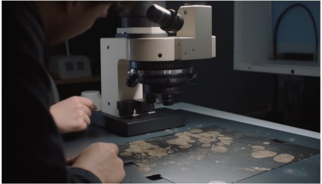
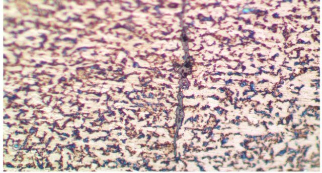
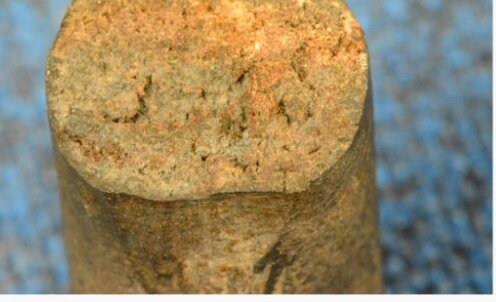
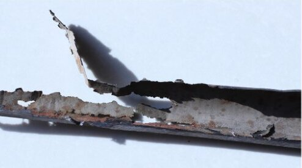
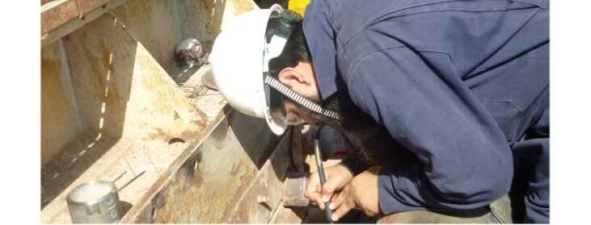
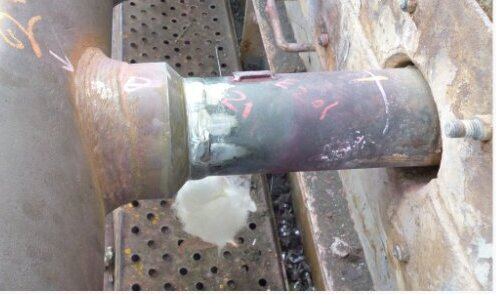
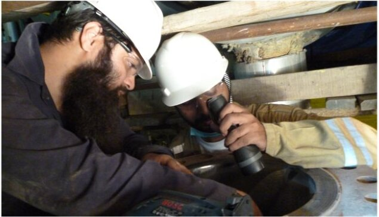
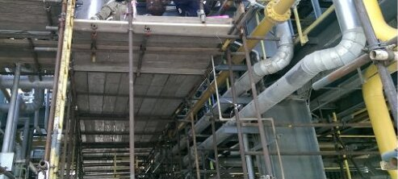

Engineering Consultancy
Assuring material reliability
At AJA Engineering Consultancy, we offer a comprehensive range of specialized services focused on material integrity and failure analysis. With over two decades of industry experience, our team of experts is dedicated to providing reliable solutions that enhance the performance and safety of your industrial assets.
With over 15 years of testing services experience, we may help you to review, write and re-write test procedures for your product lines and also assist you with reviewing test procedure provided by your raw material providers.
Read MoreWe can offer our clients to redesign a product or component. The reverse engineering process typically involves breaking down the product into its constituent parts, analyzing how they work together, and creating detailed documentation for the type of material utilized, its manufacturing route and heat treatment condition carried out to achieve the intended material properties.
Read More
Microstructural examination of materials is critical to determine metallurgical properties of metallic materials. AJA EC proudly presents you with experts who have been doing this for over 15 years and have exposure to multiple material types used in various industries. We have got right tools to assess these properties and can assist you with optical microscope up to 1000X magnification.
Read MoreLaboratory audits are an essential service for companies that operate in highly regulated industries such as manufacturing and material testing laboratories. Laboratory audits help ensure that laboratories are operating in compliance with regulatory standards and that the quality of laboratory services and test results is of the highest possible standard.
Read More
Defect and anomaly characterization is a service that involves identifying, analyzing, and characterizing defects or anomalies in products or systems. This service is valuable for companies in a wide range of industries, including manufacturing, aerospace, automotive, and more.
Read MoreOur failure analysis consultancy provides and in-depth insight on the failure mechanism of industrial Equipments.
With over a decade of experience in failure investigations, our experts offer a diverse range of services, tested and proven by some of the leading companies of the world. Vast international experience of our experts has enabled them to acquire best practices of some of the best testing labs in the world.
Read More
Material characterization is an essential service for companies that design, develop, and manufacture products using various materials. Material characterization helps companies understand the properties and behavior of materials, which can be used to optimize product performance, improve manufacturing processes, and reduce costs.
Read MoreCorrosion assessment is an essential service for companies that operate in industries such as oil and gas, marine, and infrastructure. Corrosion assessment helps companies identify and evaluate the effects of corrosion on their assets, including pipelines, vessels, and structures, and develop strategies to manage and mitigate corrosion.
Read More

Remaining life assessment studies are an essential service for companies that operate equipment or structures that have been in service for an extended period. These studies help companies evaluate the remaining useful life of their assets and determine when maintenance, repair, or replacement may be required.
Read MoreFitness-For-Service (FFS) assessments are quantitative engineering evaluations that are performed to demonstrate the structural integrity of an in-service component that may contain a flaw or damage. Ever increasing CAPEX costs for new developments, operators are looking to maximize existing assets and infrastructure.
Read More

AJAEC brings a decade of experience in Onsite Replica Metallography. Our expert has been a part of global issue where defective DSS fittings were examined to check the extent of damage. The team was mobilized in parts of Middle East to examine in excess of 600 fittings.
Read MoreAJAEC team with experience of academic as well as industry exposure has unique expertise on testing, quality and qualification business. We can provide you trainings on review of test procedures, metallurgical features, industry guidelines and technical expertise.
Read More